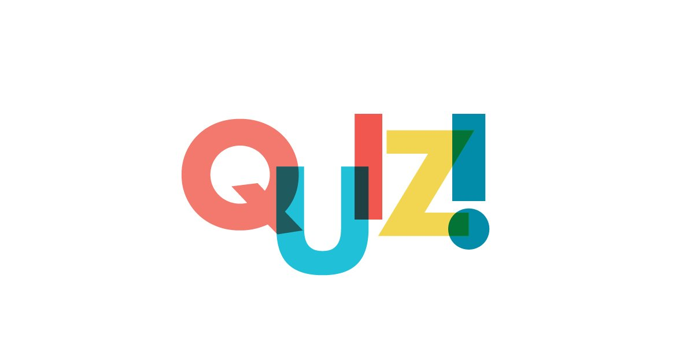
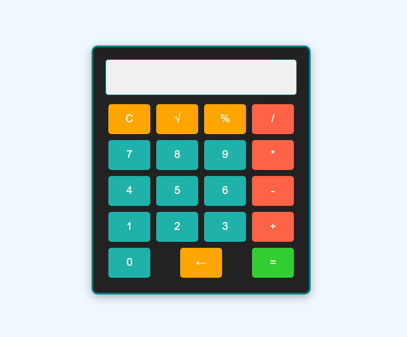
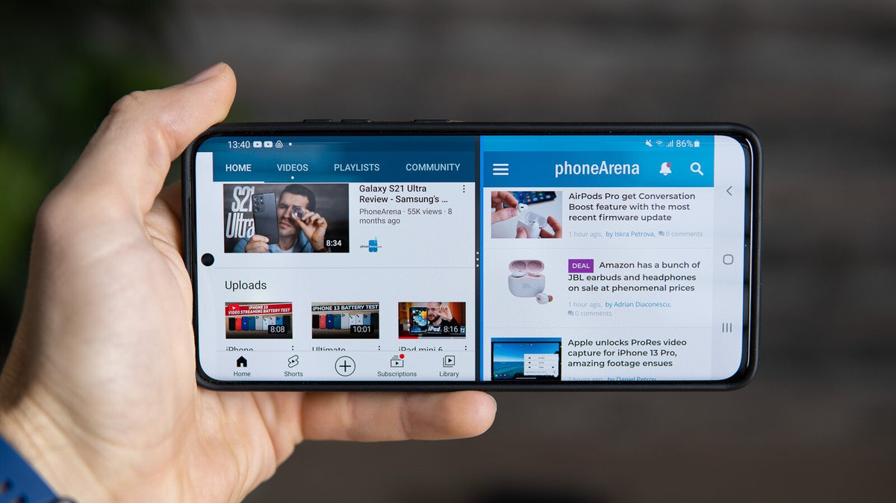
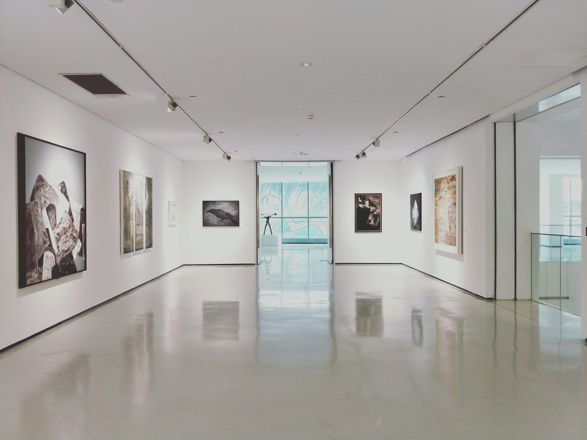
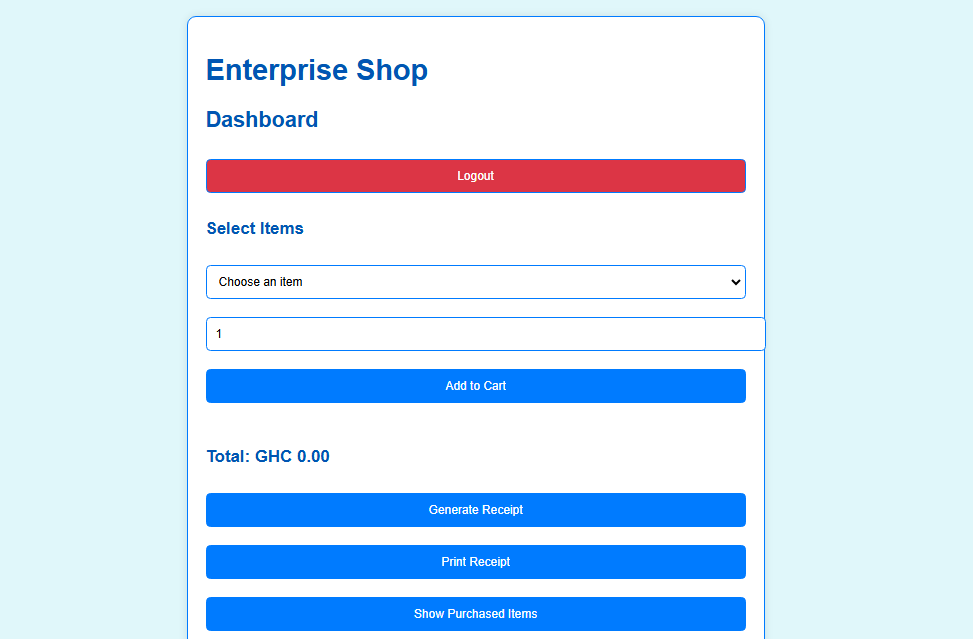
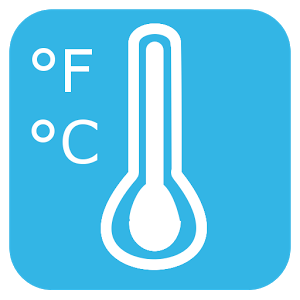
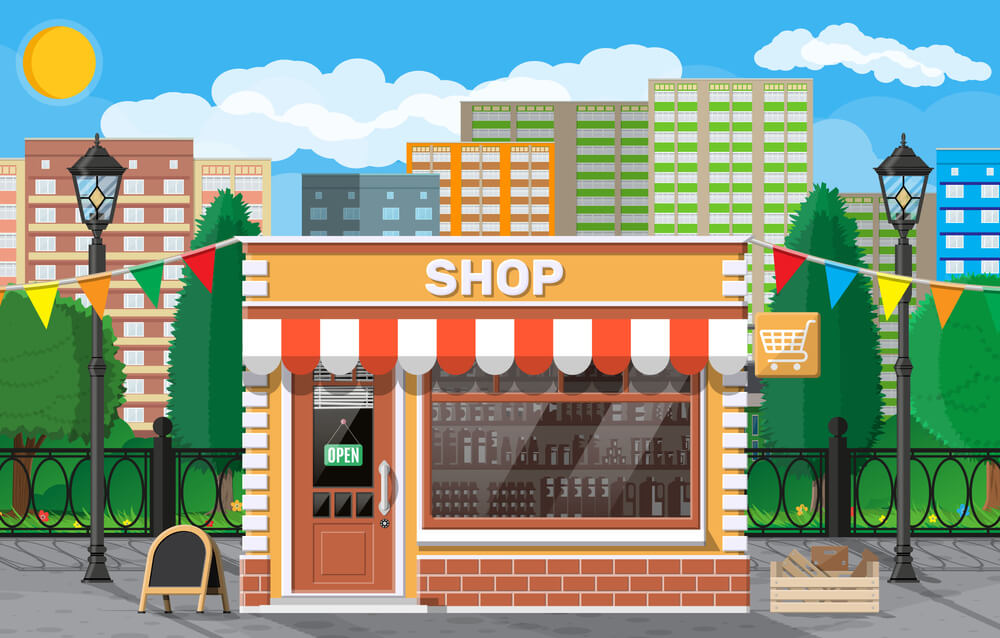
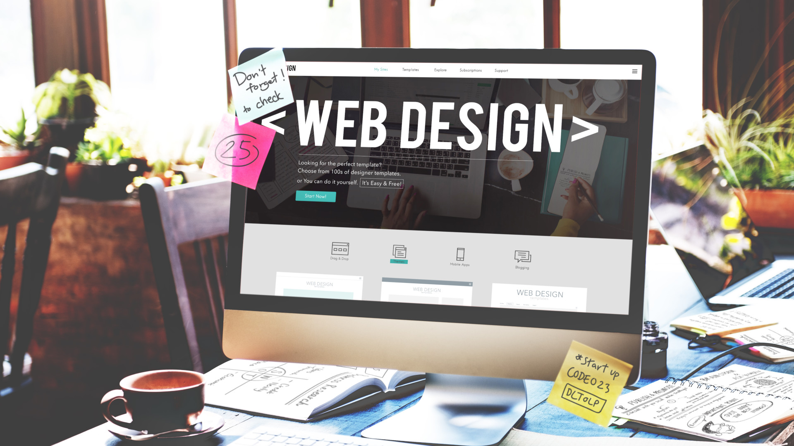
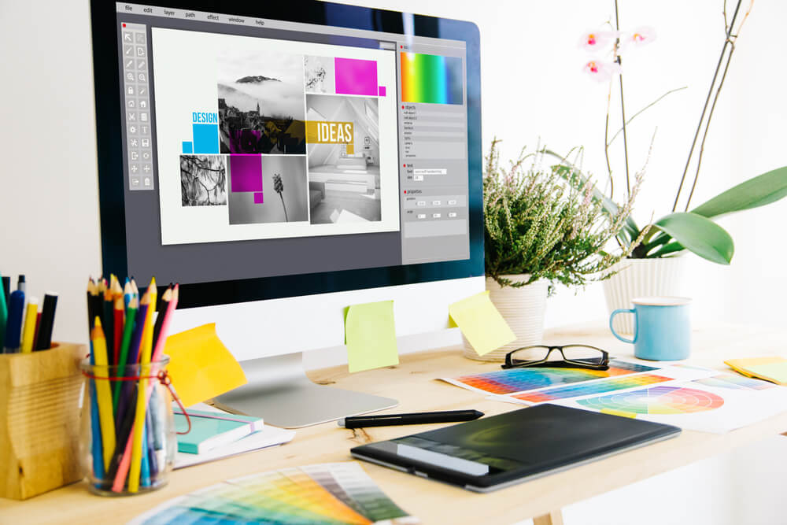

WEB APP · FRAUD PREVENTION
PFIS
A mobile money fraud detection system designed to make digital transactions safer.
Visit projectTHE WORKBENCH / PROJECT ARCHIVE
A collection of client work, experiments, and useful little tools. Filter by type or search for something specific.
A mobile money fraud detection system designed to make digital transactions safer.
Visit project
An interactive quiz experience built to help a church youth group engage with biblical knowledge.
Visit projectA lightweight task manager with add, delete, and mark-as-complete interactions.
Visit project
A compact browser calculator for everyday arithmetic, designed around intuitive input.
Visit project
A book-inspired interface that makes comparing two text or content areas simple.
Visit projectA browser-based editor with essential formatting controls and a live document preview.
Visit project
A responsive image gallery with category filtering and lightbox-style viewing.
Visit project
A practical sales tool for shop owners to manage purchases and generate printable receipts.
Visit project
Convert between Celsius, Fahrenheit, and Kelvin with immediate, synchronized results.
Visit project
A welcoming storefront website for a local provision shop, with products and contact details.
Visit projectA marketing site presenting web design, IT solutions, and creative services.
Visit projectA responsive website highlighting diagnostic services and convenient home sampling.
Visit project
A clear and approachable web presence for a home care service.
Visit project
A selection of visual design work, including graphics and promotional assets.
View collectionNo matching projects yet. Try another search.